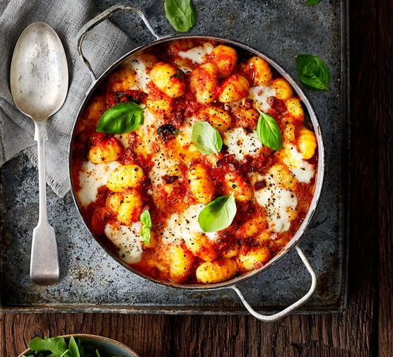

lasagna
Document

Chinese Food
Our grandfather was a preacher, so when we were growing up, the whole family would often join the community for all-day church singing and dinner on the grounds. There was almost always a table covered with food, including bowls of coleslaw. Each one tasted different, because every cook used their own special ingredient. This is ours, and it is full of colors—purple and green and red. It's got everything!
Ingredients
- 1 medium head red cabbage, chopped (10 cups)
- 1 medium green bell pepper, seeded and chopped (1 cup)
- 1 medium onion, chopped (1 cup)
- 1 teaspoon salt, plus more to taste
Steps
-
Combine cabbage, green pepper, and onion in a large bowl. In a small bowl, whisk together mayonnaise, vinegar, powdered sugar, salt, and black pepper until smooth. Pour dressing over vegetables, tossing well to combine. Cover and chill at least 2 hours to allow everything to marinate.
-
When ready to serve, gently stir in tomato and season to taste with additional salt and pepper. (Chill, covered, up to 5 days.